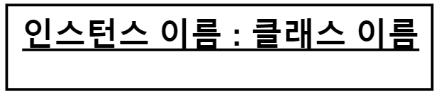

오브젝트(object)
앞서 클래스, 오브젝트와 인스턴스 용어에 대해 정리를 해보았습니다.
그렇다면 오브젝트 다이어그램에서 오브젝트를 나타내려면 어떻게 할까요?
오브젝트
사각형에 객체의 이름을 표기하고 밑줄을 그어 나타냅니다.
인스턴스의 이름은 콜론(:)의 왼편에 쓰며, 클래스의 이름은 콜론(:)의 오른편에 적어줍니다.
클래스와 매우 유사한 표기법을 가지고 있지만 오브젝트는 꼭 밑줄을 그어주어야 합니다.

한가지 재미있는 점은 인스턴스의 이름은 꼭 적어주지 않아도 괜찮습니다.